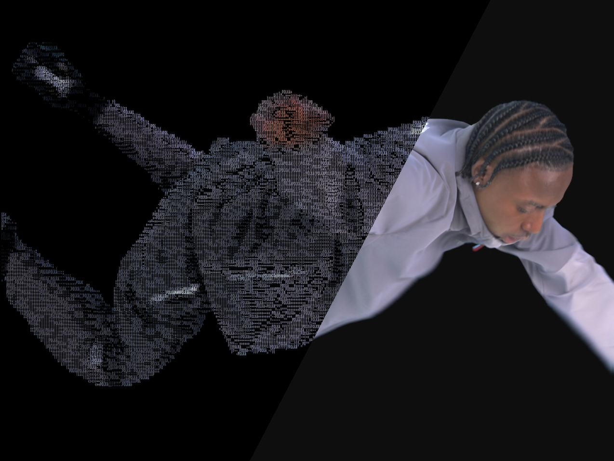
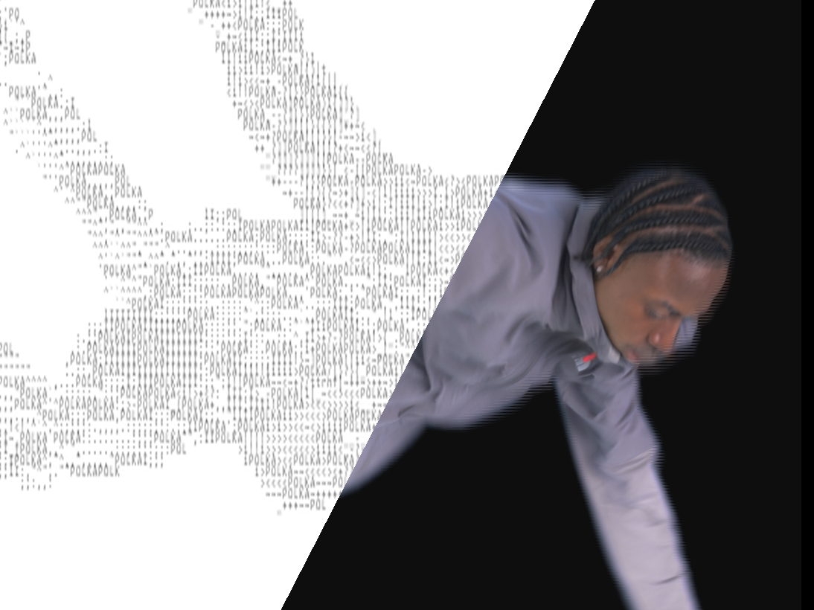

A pipeline-ready ASCII renderer for premultiplied RGBA PNG sequences. Export white-on-black, black-on-white, or full-colour — with custom branded text woven through the artwork.
Processes entire PNG sequences, not just single images. Drop a folder of frames, get back a folder of ASCII renders.
Drop an entire folder of PNGs and receive a matching folder of ASCII renders — numbered identically, ready to re-import.
White-on-black, black-on-white, and full-colour — all three generated in a single pass from one source scan.
Scatter any string — "H&M", "PDP", a logo, a year — intact through the subject. Density is fully adjustable.
Output PNGs are always resized to exactly match the source frame. No pixel-dimension surprises or aspect ratio drift.
Correctly unpremultiplies RGBA before converting — subject edges come out clean, not dark-fringed or blurred.
Run headlessly in a terminal or launch the tkinter GUI for a live settings panel with a real-time progress bar and log.
Same source footage, two styles — both generated in a single pass.


Point it at any folder of PNG frames and it handles the rest.
The tkinter interface exposes every setting — browse for your folder, tweak, and hit Convert.
Requires Python 3.10+ and two pip packages — nothing else.
git clone https://github.com/harv12321/ascii-art-converter.git
pip install Pillow numpy — that's it, no other dependencies.
python ascii_converter_2.py /path/to/png/folder — results appear in ascii_output/ alongside your frames.
python ascii_converter_gui.py — browse for your folder, tweak any setting, and hit Convert.
Edit the CONFIG block at the top of ascii_converter_2.py, or use the GUI for live adjustments.
| Setting | Default | Description |
|---|---|---|
| CELL_W / CELL_H | 6 / 12 | Source pixels per ASCII character. Keep H ≈ 2×W to match monospace aspect ratios. Smaller = more detail. |
| FONT_SIZE | 12 | Point size of the rendered monospace font in the output PNG. |
| FONT_PATH | None (auto) | Explicit path to a .ttf / .otf file. Auto-detects Consolas, Courier, DejaVu, Menlo across platforms. |
| CUSTOM_STRINGS | ["H&M", "PDP", "ASCII", "2026"] | Strings scattered intact through the subject — each is always placed as a consecutive unit, never split. |
| CUSTOM_DENSITY | 0.5 | Probability a subject character is drawn from your strings vs the ASCII ramp. 0 = never, 1 = always. |
| STYLE | "all" | "white_on_black", "black_on_white", "colour", "both", or "all". |
| ALPHA_THRESHOLD | 30 | Cells with mean alpha below this value are treated as background (range 0–255). |
| IS_PREMULTIPLIED | True | Set False for subject-on-black PNGs without a real alpha channel (e.g. black-background renders). |
| OUTPUT_FOLDER | "ascii_output" | Name of the subfolder created inside your input folder. Style subfolders are created within it. |